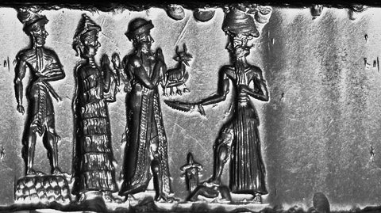
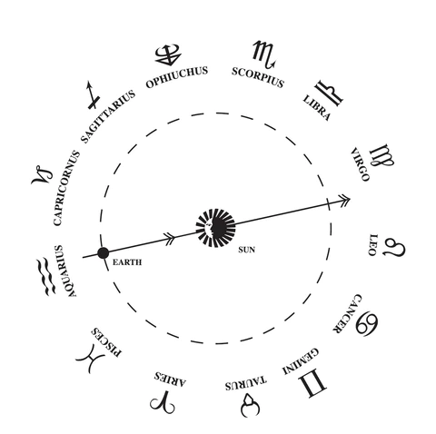

En la astrología occidental, los signos zodiacales o signos astrológicos, son los doce sectores de treinta grados de la eclíptica desde el equinoccio vernal, una de las intersecciones con la elíptica con el ecuador celeste, también conocido como Punto Aries.
Signos (En la astrología occidental se conoce como signos del zodiaco o astrológicos a los doce sectores de treinta grados exactos en los que los babilonios dividieron el camino que recorre el Sol alrededor de la Tierra y que hasta entonces se había segmentado en ocho partes. )
Así, allá por el año 500 antes de Cristo, se añadió al zodiaco lo que ahora conocemos como los signos cardinales: Aries, Cáncer, Capricornio y Libra; y con ellos, se acabaron de configurar los segmentos que ahora mismo se utilizan para la interpretación de las cartas astrales en la astrología occidental.
El zodiaco se remonta a civilizaciones tan antiguas como Egipto, Grecia, China, India y Mesopotamia. De hecho, son los babilonios quienes van a crear los signos zodiacales. Se van a basar en la posición de las estrellas para su creación, lo que conocemos como constelación: conjunto de estrellas que dan forma a un objeto, animal, en que era muy probable que estas estrellas escogidas no tuvieran relación entre ellas en absoluto.
La astrología no es considerada una ciencia, pues se basa en la creencia de que según la posición de las estrellas y planetas puede llegar a influir en la personalidad del ser humano. Lo que hicieron los babilonios para crear el zodiaco fue bastante simple, su calendario tenía 12 meses, porque se establece según los ciclos solares, por lo tanto se eligieron 12 constelaciones, es decir, 12 signos. Pero lo que no sabíamos hasta hace poco es que existían otras constelaciones que deberían estar dentro del conjunto zodiacal como Ofiuco, que fueron dejadas de lado en el zodiaco.
Lo que no calcularon los babilonios es la cantidad exacta de tiempo que van a estar expuestas a la luz solar, pues las constelaciones van a ir variando en su tamaño y forma. Por ejemplo, en el caso de Virgo, el sol pasa por esta constelación por 45 días, sin embargo, con Escorpio solo apunta por 7 días. Es por eso que se incorporarían nuevas constelaciones que también se exponen al sol en su traslación (que dura aproximadamente un año), que explica porqué no basta con 12 signos.
